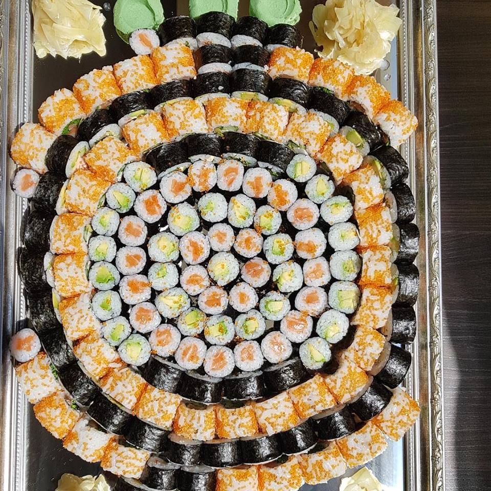
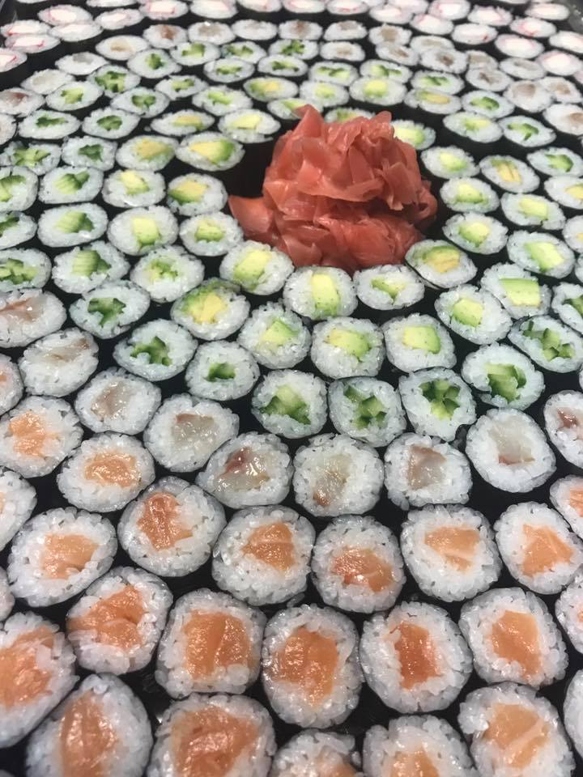
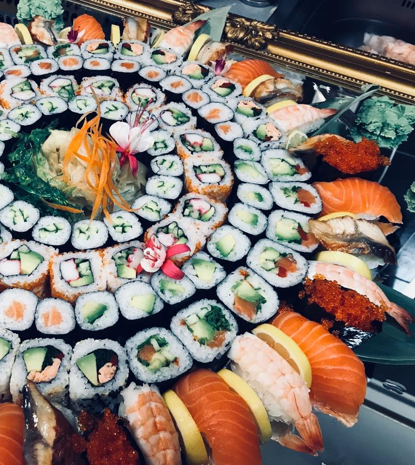
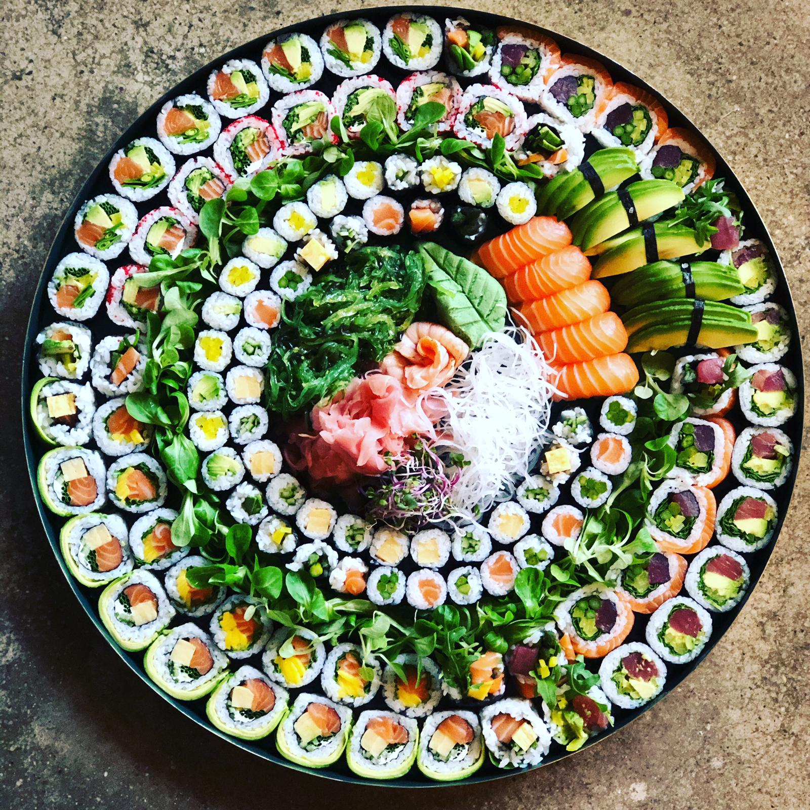

Koncept SUSHI spája v sebe tradičné japonské sushi a surovú stravu, ktorá neprechádza žiadnou tepelnou úpravou.
Jedlá, ktoré vám prinášame sú prirodzené ľudskému organizmu a preto ho žiadnym spôsobom nezaťažujú, naopak pomáhajú mu a pôsobia ako liek.
Zelenina, ktorú používame v našej kuchyni pochádza z bio záhrady v Beladiciach, kde sa pestuje s láskou bez použitia akýchkoľvek chemikálií.


Kombináciou japonských ingrediencií a kvalitných lokálnych produktov vzniká sushi najvyšších štandardov, aké sa v našich podmienkach pripraviť dá.
Preto v našej ponuke nájdete sushi pripravované výlučne z chladených rýb, zeleninovo-ovocné šťavy namiesto polievok, nepečené dezerty a samozrejme šaláty plné fantázie.
Je nám potešením, že môžeme s vami zdielať KYOYU.
